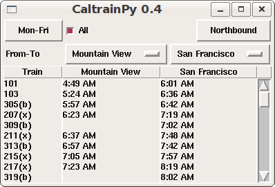
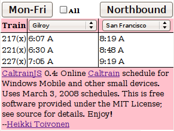

Caltrain offers schedules online, but not in a usable format for Windows Mobile, Apple iPhone or other mobile devices. CaltrainJS is a free online Caltrain schedule application optimized for small devices. CaltrainPy is also an option for devices for which the Python runtime is available.
I started on the Python version since I wanted a schedule for my Cingular 8525 PDA/smart phone running Microsoft Windows Mobile device after I had migrated away from a PalmOS device which had a great Caltrain schedule application. It was the inspiration for me starting this project.
The GUI is done using the Tkinter package. Unfortunately Python doesn't run very well on Windows Mobile, which lead me to start working on the Javascript version (see below).
It would be interesting to see if the Python versions works well on OpenMoko. PyGTK might be a better option than Tkinter in that case, at least if I am reading the OpenMoko Python page right.
Guido van Rossum expressed interest in a port to the Nokia S60 platform. The Nokia Python for S60 and Python for Series 60 tutorial seem like good resources to get started. But please note that the online Javascript version already works in Nokia phones using the more capable WebKit-based browser (see below).
CaltrainPY version is available from the Python Package Index aka Cheeseshop, just easy_install caltrain.
The Python version can also work as a library to screen scrape the online Caltrain schedules and provide output in various formats, including JSON.
I used the JSON output from CaltrainPY as basis for the Javascript version. The main targeted platform is Microsoft Windows Mobile 6, but it works in many other devices and browsers.
Tested/reported to be working in:
The Javascript version is available online at caltrain.heikkitoivonen.net.
The source code is available under the MIT License.
The source is available from Subversion at http://svn.heikkitoivonen.net/caltrain/trunk/
If you notice any problems or have suggestions for improvement, please let me know. --Heikki Toivonen.